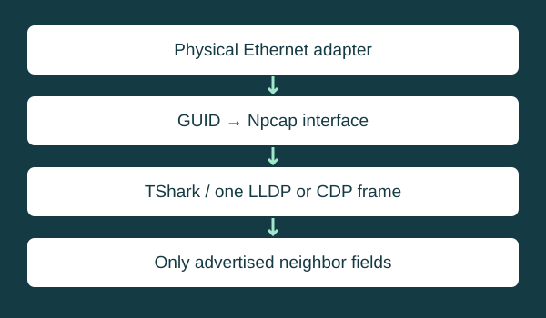

Repository-backed project / Source inspected
Link Neighbor
Identify the directly visible Ethernet neighbor without guessing the upstream path.

Purpose
Identify the directly visible Ethernet neighbor from a discovery advertisement. This answers a local attachment question rather than attempting a complete topology inventory.
Implementation
PowerShell selects an active physical Ethernet adapter, maps its interface GUID to the Npcap capture interface, and invokes TShark with LLDP/CDP filtering. Capture stops after the first matching packet or the configured timeout. Decoded fields are formatted for terminal output.
Technical challenges
Capture interface numbers can change, so the implementation correlates identifiers instead. LLDP port and chassis identifiers can use MAC-address subtypes; explicit fallback fields preserve the advertised information instead of inventing a friendlier port name.
Features verified in source
Adapter selection, a bounded timeout, a one-packet stop condition, protocol-specific field handling, and inline-phone guidance are present in the inspected script. The documented workflow writes no packet-capture file.
Limitations
Only one directly visible advertisement is decoded. A phone may be the neighbor; disabled discovery can produce a timeout. An absent field is not evidence that a capability is absent. Windows, PowerShell, TShark, and Npcap are required. No device capture or performance benchmark was run for this review.
Documented invocation
Find-LinkNeighbor -TimeoutSeconds 30This invokes the repository’s function after it has been loaded. It is a usage example, not a captured result.
Evidence and source
Inspected revision: bc1383329aeed2dee544eae02cc5c2100baf0033. Review date: 2026-11-08.
README.mdFind-LinkNeighbor.ps1